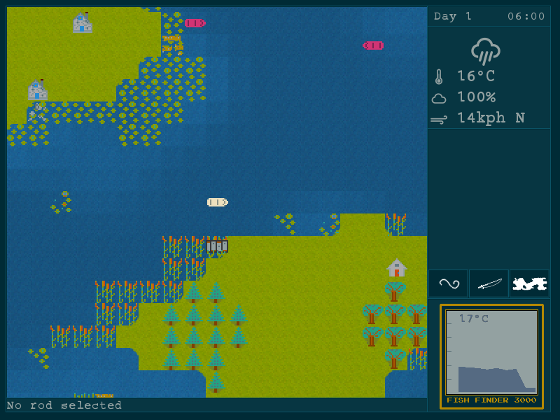

Bass lover is a fun fishing game where you enter a 3 day fishing tournament to catch the biggest fish. The game is strategic based as opposed to action based: time passes with turns, and success is determined by weather conditions, your lure selection and sometimes a little luck.

Get the latest version from GitHub
To learn how to use your boat, fish finder and tips on finding that big fish, see the manual.
Copyright 2017 Wesley Werner
This program is free software: you can redistribute it and/or modify
it under the terms of the GNU General Public License as published by
the Free Software Foundation, either version 3 of the License, or
any later version.
This program is distributed in the hope that it will be useful,
but WITHOUT ANY WARRANTY; without even the implied warranty of
MERCHANTABILITY or FITNESS FOR A PARTICULAR PURPOSE. See the
GNU General Public License for more details.
You should have received a copy of the GNU General Public License
along with this program. If not, see http://www.gnu.org/licenses/.
I used these works to help build Bass Lover:
Bass lover is inspired by a game called BassTour circa 1992 created by Dick Olsen.